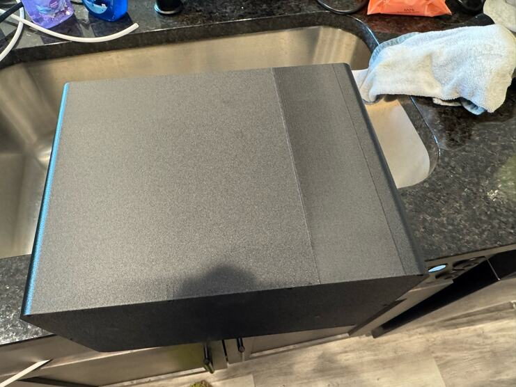
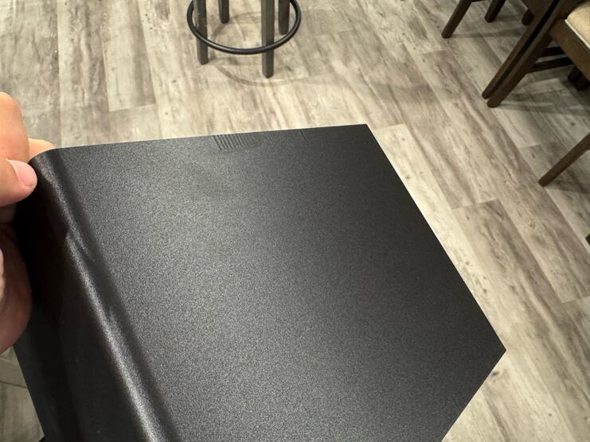

Surface
A matte wall hides the layers and nothing else.
On a flat PET-GF wall the layers vanish into the grain. That leaves a face so even that anything which breaks it stands out: the seam where every layer starts and stops, a patch of ripples, a flat in the model. Some of it shows only when the light comes from the side.
Seen in black PET-GF · Mark2 · textured PEI · left 0.4 mm nozzleNot tried in: white or coloured PET-GF, which nobody has set beside the black


Give the seam a corner
Each layer of a wall starts and stops somewhere, and on PET-GF that spot shows. Blending it along the face made a band instead of a line. The shell of 29 October has a shallow channel down one flank, and every layer but the first starts in the channel’s inside corner.
On the outside of the machine the standing walls are fluted. The grooves lay their own light and shadow, finer and far stronger than a layer line, and the seam between front and back sits in one.
Three things that showed
Flats. 18 September 2026, the first PET-GF faucet: “Some of those defects (low resolution polygons on what should be smooth surfaces) are showing through in the final print.”
The seam. 28 October 2026, the first shell: “if this were an exterior surface, we’d have to keep iterating for a while.”
Ripples. 1 November 2026, the second shell. Derek’s guess is the tall layers near the top and the hole cut through the wall beside them: “you can see it lines up pretty precisely with where we cut our hole there.”
“But this is a defect that we are okay shipping with.”
That patch is now the first entry in a register of accepted defects. Its photographs define what ships.
Still openThe cause of the ripples is Derek’s guess and has not been tested. On two failed prints the bad courses came out glossy where sound PET-GF is matte: the melted clip of 26 October and the courses above a bridge on 5 November. Nobody has tested whether gloss can be read as a sign of heat.